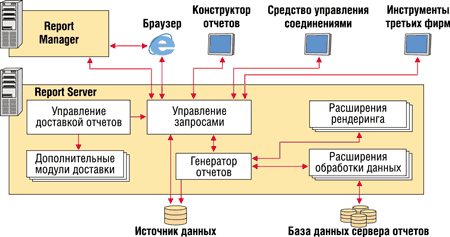
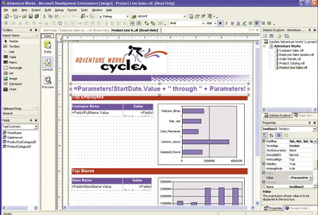
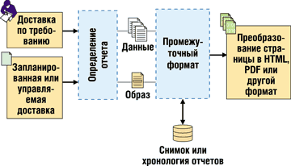

Андрей Колесов
По мере повышения среди заказчиков спроса на средства Business Intelligence корпорация Microsoft (http://www.microsoft.com) неуклонно наращивает активность в данной области. Отметим, что на этом рынке действует довольно значительная группа поставщиков - Business Objects (купившая недавно Crystal Decisions), Cognos, Hyperion (купившая Brio), MicroStrategy, Oracle, SAS, которые ориентируются главным образом на средних и крупных заказчиков. Мicrosoft, в соответствии со своей традиционной бизнес-моделью, строит стратегию вхождения на новый для себя рынок, делая ставку на два основных момента: во-первых, развивая соответствующую функциональность в продуктах, которые уже имеют сильные рыночные позиции; и во-вторых, расширяя потенциальный круг заказчиков за счет вовлечения в него, с одной стороны, малых организаций, а с другой - не только руководителей, принимающих решения, но менеджеров более низкого уровня.
До недавнего времени наибольшую известность на BI-рынке имели клиентские приложения Microsoft, представленные сегодня семейством Office System 2003. В первую очередь это Excel (многофункциональные электронные таблицы), Data Analyzer (специализированный OLAP-клиент) и MapPoint (геоинформационная система).
Однако сейчас корпорация прикладывает усилия для развития своих серверных технологий, чтобы построить законченную платформу для создания BI-решений корпоративного уровня. Эта платформа формируется вокруг одного из ее ключевых серверных продуктов - Microsoft SQL Server 2000. В составе последнего в течение последних четырех лет появились следующие компоненты:
- Analysis Services - службы OLAP для создания предварительно построенных кубов для быстрого интерактивного анализа;
- Data Transformation Services - инструменты для извлечения, преобразования и загрузки данных между операционными системами и системами бизнес-аналитики;
- Accelerator for BI - система быстрой разработки для построения и развертывания аналитических приложений.
В начале 2004 г. Microsoft выпустила новый важный компонент своей BI-платформы - SQL Server Reporting Services, преодолев таким образом "последнюю милю" бизнес-аналитики и расширив возможности BI-систем для пользователей как внутри организации, так и за ее пределами. Отметим сразу, что хотя Reporting Services и использует базу данных SQL Server, он может работать с данными из различных источников, включая интерфейсы ODBC и OLE DB. Продукт разработан так, чтобы быть совместимым с практически любой ИТ-архитектурой, а также бесшовно встраиваться в приложения.
Архитектура Web-сервисов
Reporting Services использует архитектуру Web-сервисов и содержит два основных Web-приложения для сервера отчетов и для управления отчетами (рис. 1).
|  |
| Рис. 1. Report Server и Report Manager реализованы в виде Web-сервисов.
|
Reporting Services изначально спроектирован таким образом, чтобы иметь возможность масштабирования и расширяемости, исходя из требований к надежности и способности к взаимодействию для решения уровня предприятия. В частности, высокоуровневая серверная среда позволяет создавать "фабрику" по обработке огромного числа отчетов, предоставляемых пользователям через Web.
Основанный на архитектуре Web-приложений, Reporting Services снижает затраты на инфраструктуру и реализацию. Организации могут использовать недорогие серверные платформы и быстро развертывать Web-сервисы, не строя готовой отчетной инфраструктуры. Кроме того, Reporting Services обеспечивает пользователям быстрый и удобный доступ к нужной информации, тем самым повышая производительность их труда.
Традиционные и интерактивные отчеты
Reporting Services отвечает широкому набору потенциальных требований для поддержки традиционных и интерактивных (Web) отчетов. Поддерживаемые в нем основные типы отчетов приведены в табл. 1.
Таблица 1. Поддерживаемые в Reporting Services типы отчетов
| Форма отчета | Описание |
| Табличный | Фиксированное количество столбцов |
| Матричный | Количество столбцов зависит от результата запроса |
| Графический | Данные представлены графически |
| В свободной форме | Данные на странице организованы в свободной форме; полезно для создания форм |
При создании отчетов можно комбинировать различные формы в одном и том же отчете. Механизм генерации отчетов обеспечивает фильтрацию после выполнения запроса к базе данных, сортировку, группировку и широкий набор функций агрегации: сумма, среднее, минимум, максимум, количество, а также промежуточные значения.
Для отчетов, предназначенных для печати, Reporting Services предоставляет полный контроль над разбиением текста на страницы, включая оформление верхнего и нижнего колонтитулов, установку границ и принудительное разбиение на страницы.
Для поддержки интерактивности Reporting Services также обеспечивает ряд возможностей.
Параметризованные отчеты отфильтровывают информацию, предоставляя только те данные, которые предназначены для данного пользователя.
Скрытые элементы отчета (drill-down) можно показывать и скрывать по выбору пользователя.
Встроенные в отчеты гиперссылки направляют пользователей на Web-страницы. Drill-through связи открывают другой отчет из текущего (например, детализированный отчет - из суммарного). Первоначальный отчет обычно передает параметры в детализированный. Закладки направляют пользователей в другую область текущего отчета.
Карта документа появляется на HTML-странице отчета как таблица содержания рядом с отчетом. Когда пользователь выбирает элемент из этой таблицы, браузер переведет его в соответствующее место отчета.
Чтобы повысить производительность труда и предоставлять пользователям только ту информацию, которая им нужна, Reporting Services предлагает несколько способов персонализации отчетов. Специфичные версии отчетов помогут ИТ-подразделениям избежать трудоемких задач создания и управления специфичными отчетами для конкретных подразделений и людей.
Reporting Services предлагает различные методы персонализации отчетов, включая следующие.
Безопасность на уровне базы данных помогает контролировать доступ пользователей к информации. Для того чтобы реализовать эту возможность, отчет должен запускаться с пользовательскими параметрами регистрации.
Поддержка параметризованных запросов. Можно брать из источника данных только необходимую информацию.
Фильтрация данных непосредственно внутри отчета. С помощью этого метода запрос возвращает все данные, но только информация, релевантная данному пользователю, включается в его версию отчета.
Создание связных отчетов, которые ссылаются на исходный, но имеют разные свойства, разрешения и/или параметры. Например, связный отчет может отфильтровывать данные, возвращаемые из определенного отчета, для создания более специализированных версий исходного отчета.
Встроенное создание отчетов
В Reporting Services имеются все основные возможности и пользовательские сервисы, необходимые для создания и доставки отчетов, причем без необходимости писать дополнительный код. Продукт также поддерживает интеграцию с широким набором инструментов для создания отчетов.
Графическая оболочка для создания отчетов - Report Designer (рис. 2) использует интегрированную среду разработки Visual Studio .NET. Пользуясь всеми функциями этого инструмента, пользователи смогут обойтись без написания кода для создания отчетов.
|  |
| Рис. 2. Report Designer предлагает возможности графической разметки отчета.
|
Используя Report Designer, можно настраивать источники данных и конструировать запросы, добавлять в отчет так называемые регионы данных и поля, определять разметку отчета и включать в него интерактивные возможности. Чтобы облегчить процесс создания отчета, можно использовать Report Wizard. Есть и возможность предварительного просмотра отчета с загруженными в него данными. Как только отчет готов, Report Designer публикует его на сервере отчетов с помощью Reporting Services SOAP API.
Reporting Services использует отраслевой XML-стандарт для формирования отчета - Report Definition Language (RDL). Помимо удобства передачи данных в этом формате, RDL позволяет применять различные инструменты третьих фирм.
Исходные данные могут извлекаться из широкого спектра источников, включая реляционные, иерархические и многомерные БД. Напрямую поддерживаются Microsoft SQL Server 2000 и SQL Server 7.0, Oracle, OLE DB-совместимые источники данных, включая Analysis Services, а также ODBC. Разработчики могут подключать и другие источники данных через открытый набор API, основанный на .NET.
Управление отчетами
Report Manager управляет всеми аспектами жизненного цикла отчетов. В нем реализована возможность создания и выполнения скриптов, что позволяет администраторам автоматизировать пакетные операции на серверах. Например, с их помощью можно применять политики безопасности к набору отчетов на сервере, добавлять или удалять элементы или копировать элементы сервера отчетов с одного сервера на другой.
Для управления и контроля доступа к отчетам на сервере отчетов и разграничения административного доступа Reporting Services использует модель безопасности, основанную на ролях. Она разграничивает задачи администрирования, выполняемые обычно ИТ-персоналом, и задачи формирования контента отчетов. В результате ИТ-подразделения могут делегировать задачи управления данными отчетов (или групп отчетов) разработчикам отчетов или соответствующим отделам, в целом сохраняя контроль за средой управления отчетами и их безопасностью.
Чтобы обеспечить безопасность, продукт поставляется с предустановленным набором ролей, который можно настраивать в соответствии с инфраструктурой предприятия (табл. 2). Организации могут использовать существующие роли или создавать новые с учетом своих потребностей.
Таблица 2. Набор ролей и соответствующие им задачи
| Предопределенная роль | Разрешенные задачи |
| Браузер (Browser role) | Запуск отчетов и навигация по структуре каталогов |
| Менеджер контента (Content manager role) | Определение структуры каталогов для хранения отчетов и других элементов; установка безопасности на уровне элемента; просмотр и управление элементами, которые хранятся на сервере |
| Издатель (Publisher role) | Публикация контента на сервере отчетов |
| Мои отчеты (My Reports role) | Построение отчетов для персонального использования и хранение отчетов в собственной папке |
| Системный администратор (System administrator role) | Включение/выключение настроек сервера отчетов и установка значений по умолчанию; установка безопасности на сайте в целом; определение и создание ролей; управление заданиями по расписанию |
| Системный пользователь (System user role) | Просмотр запланированной по расписанию информации в общих планировщиках или просмотр другой важной информации о сервере отчетов |
Чтобы удовлетворить потребности крупномасштабных организаций, решение для управления отчетами должно совмещать оперативный доступ к информации для пользователей, высокую производительность и эффективное использование ресурсов. С этой целью в Reporting Services введены гибкие настройки для обработки отчетов.
Запуск отчетов по требованию и по расписанию. Администраторы сервера отчетов могут контролировать время запуска отчетов; это особенно важно для отчетов, которые обрабатывают большие объемы данных. Отчеты могут быть запущены по требованию (когда пользователь запрашивает данный отчет), по расписанию либо в обоих вариантах. Несколько отчетов могут использовать общее расписание обработки, например, при генерации месячной или квартальной отчетности.
Кэширование отчетов. Reporting Services отделяет базовую обработку отчета (получение и размещение данных) от преобразования отчета в указанный формат (рис. 3). Перед преобразованием и доставкой отчетов сервер отчетов создает их в промежуточном формате. Это позволяет администраторам отделять функции обработки отчета от функций доставки для более эффективного использования ресурсов. Отчеты в промежуточном формате кэшируются автоматически, и, как только пользователь запрашивает данный отчет, сначала проверяется кэш, и если в нем есть этот отчет - именно он отправляется пользователю, вместо того чтобы генерировать отчет с самого начала. Если десять пользователей запрашивают один и тот же отчет, первый пользователь генерирует его, а остальные девять получат отчет из кэша.
|  |
| Рис. 3. Отделение обработки данных от преобразования в конкретный формат делает решение более гибким.
|
Снимки отчета в заданный момент времени (snapshot). Снимки сохраняются отдельно в промежуточном формате. Администраторы могут запланировать создание снимка с заданным интервалом; пользователи, которые в дальнейшем будут запрашивать такой отчет, получат его из снимка, даже если базовые для отчета данные были изменены. Снимки полезны для того, чтобы обеспечить устойчивые представления данных, когда множество пользователей должны работать с одним и тем же образом данных. Снимки удобны также для того, чтобы обрабатывать большие объемы информации в часы наименьшей загрузки системы, особенно при круглосуточных запросах к отчетам.
Связные отчеты. Связный отчет использует то же самое определение отчета, что и исходный, но у него могут быть совершенно другие свойства, разрешения и параметры. Например, администратор может создать связный отчет с параметром, который отфильтровывает данные, возвращаемые исходным отчетом. В этом случае администратору легко создавать более ограниченные версии исходного отчета. Связные отчеты предлагают простой способ создания персонализированных версий. Они могут храниться, например, отдельно от оригинальной версии, в другой папке, и права доступа для них тоже могут быть другими. Использование связных отчетов позволяет существенно уменьшить количество создаваемых отчетов.
Хронология отчета. В Reporting Services есть такая встроенная возможность управления отчетами, как автоматическое сохранение записей снимков отчета. Такие записи называются "хронология отчета". Хронология предоставляет возможность сохранять информацию, которая может понадобиться для просмотра прошлых отчетов. Администраторы могут контролировать поддерживаемую хронологию, а также количество версий отчета в хронологии.
Доставка отчетов
Reporting Services обеспечивает доступ к отчетам именно в то время и в том месте, где они нужны. Поддерживаются два основных метода доставки: доставка по требованию (pull), при которой пользователи динамически запрашивают отчеты из сервера отчетов, и запланированная или управляемая событиями доставка (push), в которой подписчики принимают отчеты автоматически при обновлении данных или по специальному расписанию.
За отчетами по требованию пользователи обращаются к серверу отчетов через браузер. Доставкой отчетов по расписанию можно управлять через подписку, в которой указывается в числе прочего желаемый формат отчета и тип доставки. Например, один пользователь хочет видеть HTML-версию отчета, а другой хочет получать его как файл Excel, вложенный в почтовое сообщение.
Пользователи получают отчеты с помощью подписки в одном из трех случаев:
- администратор сервера отчетов включает их в подписку на данный отчет;
- они динамически подписываются на отчет, возможно, персонализируя канал и формат доставки;
- внешний источник данных динамически генерирует список получателей отчета в режиме реального времени (подписка, управляемая данными).
Пользователи могут создавать собственные персональные подписки, определяя как свои предпочтения по формату отчетов и способу доставки, так и то, какие именно отчеты они хотят получать. Все это регулируется моделью безопасности, поэтому пользователи могут подписываться только на те отчеты, к которым у них есть доступ. Персональные подписки могут включать предустановленные параметры для параметризованных отчетов (например, просмотр объема продаж только по восточному региону).
Во многих крупных организациях потенциальные получатели отчета часто меняются в соответствии с принадлежностью к определенному отделу или по территориальному признаку. Некоторые отчеты нацелены на постоянно меняющуюся аудиторию, например, сотрудников, которые оставят компанию в следующем месяце. Вместо ручного обновления подписки ИТ-персоналом Reporting Services поддерживает подписку, управляемую данными.
В такой подписке список получателей отчета создается динамически при включении подписки; для этого используются внешние источники данных, например, база данных о сотрудниках. Источник данных может содержать другие виды информации (например, дату приема на работу или название должности), позволяющие отфильтровывать данные в отчете пользователя - другими словами, персонализировать отчет.
Варианты преобразования отчета
Поскольку преобразование отчета отделено от первоначальной обработки данных, один и тот же отчет для разных пользователей можно преобразовать в разные форматы (например, HTML или PDF). Форматы, которые поддерживает модуль преобразования, кратко описаны в табл. 3.
Таблица 3. Характеристики форматов преобразования
| Формат | Описание |
| HTML | Для браузеров, поддерживающих HTML 4 (таких, как Microsoft Internet Explorer) и HTML 3.2. Предназначен для просмотра отчетов и навигации по папкам отчетов |
| HTML With Office Web Components | HTML с дополнительной функциональностью при помощи Office Web Components (OWC) обеспечивает дополнительную интерактивность на стороне клиента. Графики создаются с помощью Chart control, а матрицы - с помощью PivotTable control |
| Multipart HTML | Возможность встраивания изображений в файл вывода. Этот формат полезен для клиентов Web-приложений, которые не имеют доступа к ресурсам, хранящимся на сервере отчетов или в другом месте |
| Microsoft Excel | Создает электронную таблицу, которая сохраняет исходную разметку и форматирование |
| Image | Преобразует отчет в битовые образы или метафайлы, включая любой формат,
поддерживаемый GDI+: BMP, EMF, GIF, JPEG, PNG, TIFF и WMF. По умолчанию
изображение создается в формате TIFF. Формирование изображения удобно для того, чтобы отчет выглядел одинаково на любом клиентском устройстве. Преобразование происходит на сервере, поэтому на нем должны быть установлены все используемые в отчете шрифты |
| Позволяет создавать отчеты в портативном формате документа, который можно открывать и просматривать с помощью Adobe Acrobat |
Расширения, набор API и интерфейсы
Reporting Services создавался таким образом, чтобы отвечать широкому набору требований к системам отчетности, включая интеграцию в инструменты и приложения независимых разработчиков. Модульная архитектура и расширяемый набор API позволяют разработчикам ПО и программистам на предприятиях одинаковым образом интегрировать работу с отчетами в случае как унаследованных систем, так и приложений от третьих компаний. Например, разработчики могут использовать открытые интерфейсы и расширения для следующих задач:
- создание приложений для управления сервером отчетов через интерфейс SOAP;
- создание приложений или использование браузера для манипулирования результатом выполнения отчета через URL-ссылки;
- расширение модуля преобразования, доставки и обработки данных с помощью Microsoft .NET Framework.
XML Web-сервисы в Reporting Services предоставляют единую точку входа ко всей функциональности сервера отчетов и могут действовать как коммуникационный интерфейс между клиентскими приложениями и сервером отчетов. Они используют SOAP поверх HTTP, что позволяет разработчикам создавать собственные инструменты для любой части жизненного цикла отчетов: от управления до выполнения.
Сервер отчетов Reporting Services доступен через параметризованные URL-запросы, поэтому разработчики могут внедрять в приложения гиперссылки на отчеты и на элементы сервера отчетов. Например, можно осуществлять доступ и запрашивать отчет с сервера отчетов с помощью URL, а также передавать, если нужно, соответствующие параметры. Ссылки URL полностью соответствуют принципам URL-форматирования, предлагаемым World Wide Web Consortium (W3C) и стандартам Internet Engineering Task Force (IETF); кроме того, они совместимы с большинством браузеров и приложений, поддерживающих стандартную URL-адресацию.
Reporting Services включает также провайдер Windows Management Instrumentation (WMI) для управления сервисами.
Microsoft поставляет набор API, которые можно использовать для расширения возможностей Reporting Services. Поскольку продукт имеет модульную архитектуру, разработчики легко могут вставлять свои расширения в продукт, не дожидаясь, пока Microsoft добавит эти возможности в следующих версиях.